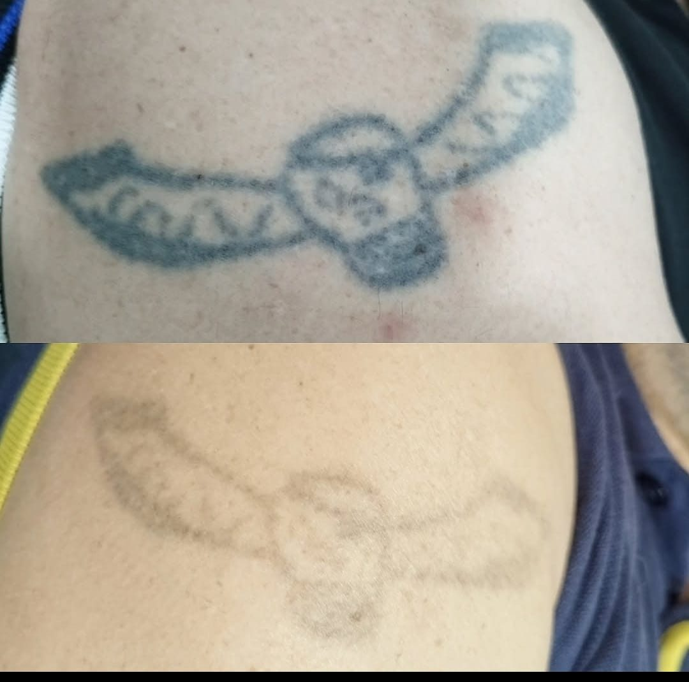

Renueva tu lienzo. Eliminamos tatuajes con precisión y cuidado.


Eliminación segura y eficaz
La eliminación de tatuajes mediante láser utiliza pulsos de energía lumínica de alta precisión para fragmentar las partículas de tinta alojadas en las capas profundas de la piel.
En nuestro centro empleamos tecnología Q-Switched, reconocida por generar pulsos ultracortos enfocados en el pigmento sin afectar el tejido circundante.
Adaptamos longitud de onda, fluencia, frecuencia y tamaño del spot según tipo de tinta, profundidad del tatuaje y fototipo de piel.
Fotos de tratamientos y proceso.


